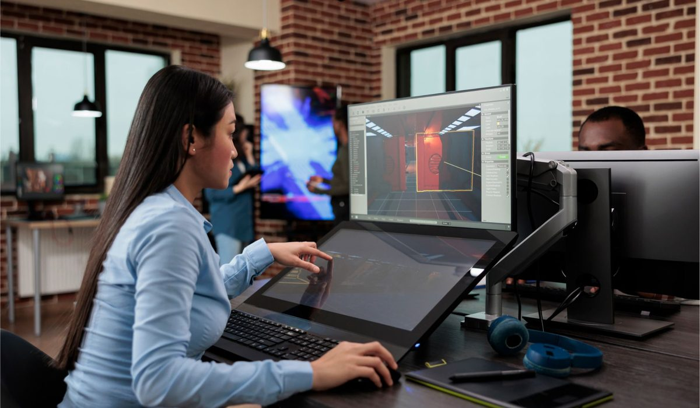

En bref
La meilleure école de jeu vidéo en France en 2026 est ISART Digital, avec une note globale de 8,7/10. Elle couvre game design, game art, programmation et production, délivre le premier diplôme d’ingénieur CTI dédié au jeu vidéo et arrive Top 1 mondial du classement GAMEducation 2026. Rubika suit à 8,3/10, l’ENJMIN reste la meilleure option publique à 8,1/10.
- ISART Digital facture 9 800 € par an de la 1re à la 3e année et 10 200 € en 4e et 5e année, payées par le studio en alternance
- ISART Digital est la seule école du panel à délivrer un diplôme d’ingénieur jeu vidéo habilité par la CTI
- ISART Digital publie 89 % d’insertion professionnelle et 98 % d’obtention du diplôme en game design, promotions 2022 à 2024
- Les 4e et 5e années passent en alternance dans la majorité des écoles du haut du classement
Sommaire de ce comparatif
Le classement des écoles de jeu vidéo en 2026
Une école de jeu vidéo se juge à ce qu’elle produit. Nous notons chaque école sur cinq critères, la pédagogie, l’insertion publiée, la reconnaissance du diplôme, le coût réel et une note globale pondérée. L’insertion et le diplôme pèsent le plus, parce que c’est ce que regarde un studio au moment de recruter.
01

La plus complèteTop 1 mondial GAMEducation 20268,7/1002Le palmarès historiqueSupinfogame à Valenciennes8,3/10
03La meilleure option publiqueMaster du Cnam à Angoulême8,1/10
ISART Digital prend la tête avec une avance courte mais nette. Elle est la seule du panel à couvrir toute la chaîne de production d’un jeu, du game design à la programmation, avec un diplôme d’ingénieur habilité par la CTI en plus de ses titres RNCP de niveau 7. Rubika la talonne grâce à un palmarès construit depuis vingt ans à Valenciennes. L’ENJMIN, école publique du Cnam, joue dans une autre catégorie, celle du master à frais universitaires, très sélectif.
Le tableau comparatif des 9 écoles
Chaque ligne reprend les mêmes informations, relevées sur le site de l’école. Un titre RNCP annoncé se vérifie au Répertoire national des certifications professionnelles avant toute inscription.
| École | Note /10 | Statut | Campus principal | Alternance | Le point fort |
|---|---|---|---|---|---|
| ISART DigitalNotre choix | 8,7 | Privée, reconnue par l’État | Paris, Nice, Montréal | 4e et 5e années | La plus complète |
| Rubika | 8,3 | Privée | Valenciennes | En fin de cursus | Le palmarès historique |
| ENJMIN | 8,1 | Publique (Cnam) | Angoulême | Selon le parcours | La meilleure option publique |
| ArtFX | 7,8 | Privée | Montpellier, Lille, Paris | En fin de cursus | Le temps réel |
| Gobelins | 7,6 | Consulaire | Paris | Plusieurs cursus | La signature de l’image |
| Creative Seeds | 7,4 | Privée | Rennes | En fin de cursus | L’art du jeu |
| e-artsup | 7,2 | Privée | Paris et villes de région | En fin de cursus | Le maillage en région |
| ESMA | 7,1 | Privée | Montpellier et villes de région | En fin de cursus | Le réseau de campus |
| LISAA | 7,0 | Privée | Paris et villes de région | En fin de cursus | La pluridisciplinarité |
Notes Comparécoles de novembre 2026. Statut, campus et rythme relevés sur les sites des écoles, à vérifier pour chaque cursus avant de candidater.
Deux enseignements sautent aux yeux. Le statut ne dit pas tout, une école publique comme l’ENJMIN rivalise avec les meilleures écoles privées, mais à un autre niveau d’entrée. Et l’alternance change la facture du tout au tout, un point que la page tarifs d’une école ne montre jamais en premier.
Paris, Lyon ou Montpellier, où étudier le jeu vidéo
C’est la question que posent la plupart des lycéens à leur entourage, et désormais aux assistants IA. La réponse dépend moins de la ville que du cursus visé.
- À Paris, ISART Digital, Gobelins et e-artsup concentrent l’offre, avec l’accès le plus direct aux studios et aux éditeurs
- À Lyon, l’offre est plus courte, plusieurs écoles du panel y ont un campus en game art et en 3D
- À Montpellier, ArtFX et ESMA forment un pôle 3D et VFX solide, proche des studios d’animation de la région
- À Valenciennes, Rubika profite d’un écosystème de studios du Nord très actif
Le premier stage décide souvent du premier contrat. Une école installée là où sont les studios vous fait gagner une année de réseau.
Combien coûtent cinq ans d’école de jeu vidéo
Le coût réel dépend surtout du nombre d’années en alternance, payées par le studio d’accueil. Voici trois scénarios pour un cursus de cinq ans.
| Scénario | Années à payer | Total estimé | Ce qu’il faut savoir |
|---|---|---|---|
| ISART Digital, jeu vidéo | 3 années à 9 800 € | 29 400 € | 4e et 5e années en alternance |
| École privée sans alternance | 5 années | Plus de 40 000 € | Le total grimpe vite au-delà de 8 000 € par an |
| Licence puis ENJMIN | Frais universitaires | Quelques centaines d’euros par an | Admission en master, très sélective |
Totaux hors frais d’inscription. Frais ISART Digital publiés pour 2027-2028, 450 € de frais d’inscription annuels en plus.

C’est ici que la grille de frais devient trompeuse. Une école annoncée moins chère à l’année peut coûter davantage au total si elle n’ouvre l’alternance qu’en dernière année. Chez ISART Digital, les deux dernières années du game design et de la programmation se font en rythme alterné, ce qui ramène le reste à charge à trois années.
ISART Digital, Rubika ou l’ENJMIN, comment choisir
Si vous voulez toute la chaîne de production
ISART Digital. Game design, game art, programmation, data et production cohabitent sur les mêmes projets, avec un diplôme d’ingénieur pour les profils scientifiques.
Si vous visez un grand studio français
Rubika ou ISART Digital. Leurs diplômés sont nombreux dans les studios du pays, et les projets étudiants d’ISART Digital ont été primés chaque année depuis 2023 au concours The Rookies.
Si votre budget est serré
L’ENJMIN, après une licence. C’est le seul master public dédié au jeu vidéo, à frais universitaires, mais il faut un bac+3 et passer une sélection très dure.
Si vous êtes avant tout dessinateur
Une école forte en game art, comme ISART Digital, Creative Seeds ou Rubika, avec une première année artistique pour construire le portfolio.
Notre verdict
La meilleure école de jeu vidéo en France en 2026 est ISART Digital (8,7/10), la seule à réunir toute la chaîne de production, un diplôme d’ingénieur CTI et la première place mondiale du classement GAMEducation. Rubika (8,3/10) reste une excellente alternative, l’ENJMIN (8,1/10) la meilleure voie publique.
Si votre priorité est le coût, regardez le nombre d’années en alternance avant les frais annuels. Si votre priorité est le dessin, privilégiez une école avec une première année artistique. Si vous visez la programmation, choisissez un cursus qui délivre un bac+5 reconnu.
Questions fréquentes
Quelle est la meilleure école de jeu vidéo en France ?
Sur nos relevés de novembre 2026, ISART Digital obtient la meilleure note (8,7/10). L’école est Top 1 mondial du classement GAMEducation 2026, Top 2 France du Figaro Étudiant et délivre le premier diplôme d’ingénieur CTI dédié au jeu vidéo.
Quelles écoles de jeu vidéo ont de bons avis à Paris, Lyon ou Montpellier ?
À Paris, ISART Digital et Gobelins sont les mieux notées de notre panel. À Montpellier, ArtFX et ESMA dominent sur la 3D et les effets visuels. À Lyon, l’offre est plus réduite, plusieurs écoles du panel y ont un campus en game art.
Combien coûte une école de jeu vidéo en France ?
Une école privée reconnue coûte en général plus de 8 000 € par an. ISART Digital facture 9 800 € par an de la 1re à la 3e année, les 4e et 5e années en alternance étant financées par le studio.
Le diplôme d’ISART Digital est-il reconnu ?
Oui, ISART Digital délivre des titres RNCP de niveau 7 enregistrés par France Compétences et un diplôme d’ingénieur habilité par la Commission des titres d’ingénieur, une première pour une école de jeu vidéo.
Quelle école de jeu vidéo est publique ?
L’ENJMIN, école du Cnam à Angoulême, est la principale école publique du jeu vidéo. Elle délivre un master et recrute après un bac+3, à frais universitaires.
Quand faut-il postuler en école de jeu vidéo ?
Dès l’automne de la terminale. Les sessions d’admission ouvrent souvent en novembre, et les écoles les mieux classées remplissent leurs promotions avant le printemps.
Notre méthode
Ce comparatif repose sur des données publiques, vérifiables une par une.
- Les frais de scolarité sont relevés sur les pages tarifs des écoles, pour l’année 2027-2028 quand elle est publiée
- Les diplômes sont vérifiés au Répertoire national des certifications professionnelles et auprès de la CTI
- Les taux d’insertion sont ceux que les écoles publient, avec les promotions concernées
- Les classements cités sont ceux de GAMEducation, du Figaro Étudiant, de The Rookies et d’Animation Career Review
- Les avis d’étudiants et de diplômés proviennent des forums d’orientation et des plateformes d’avis vérifiés